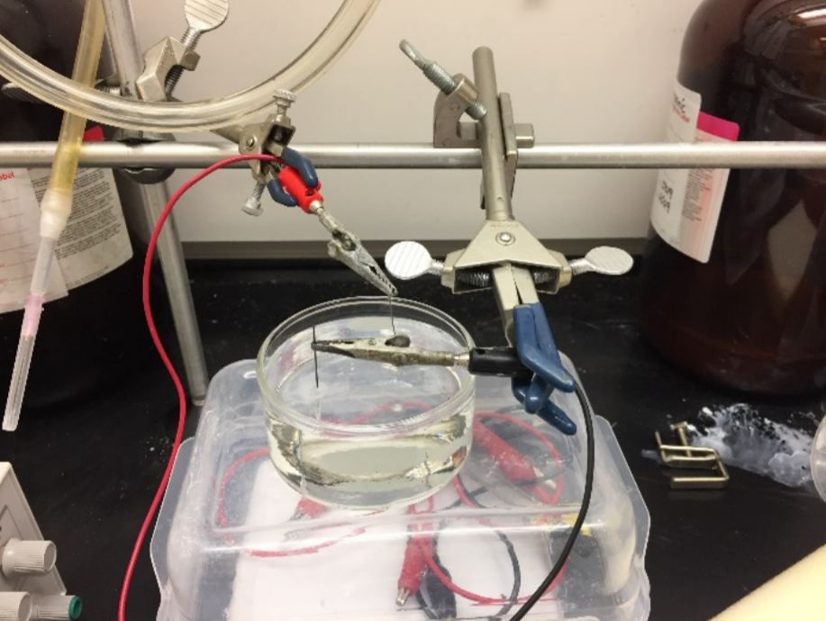
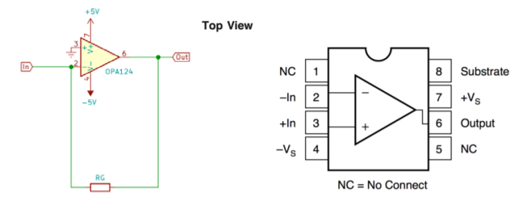
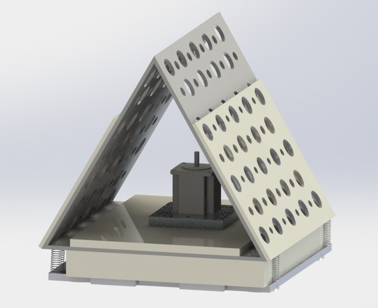
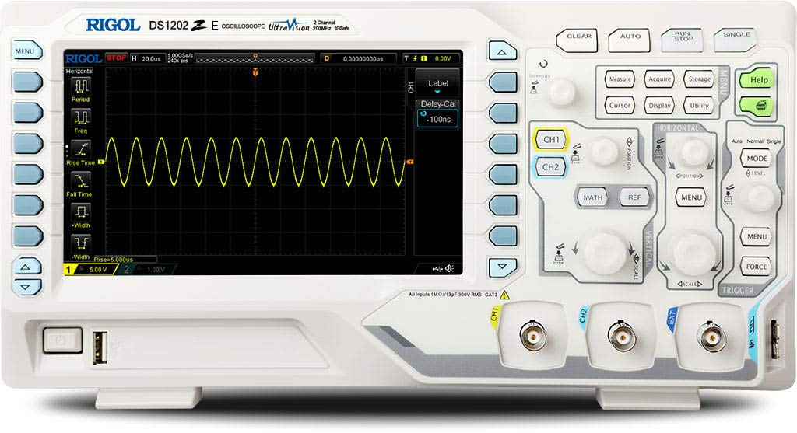
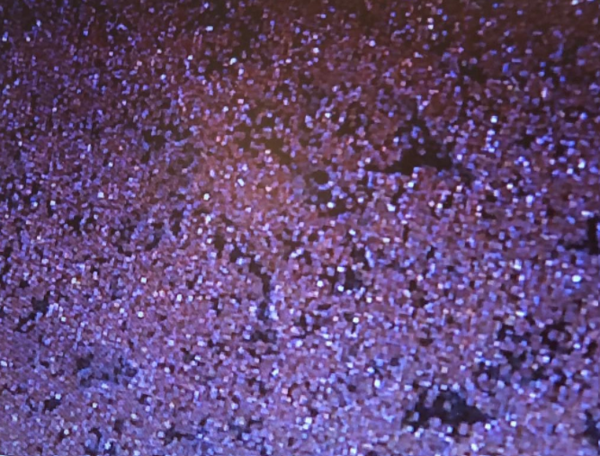
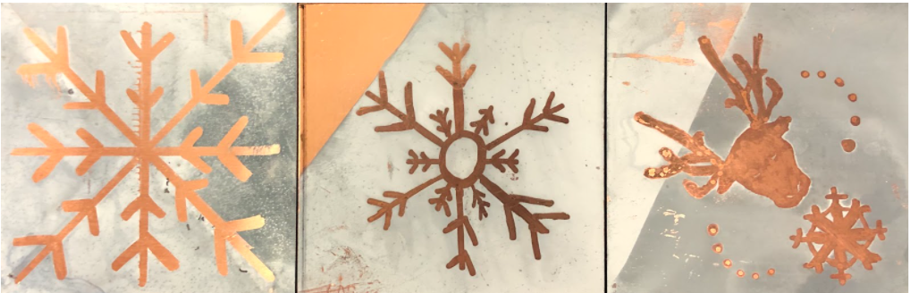
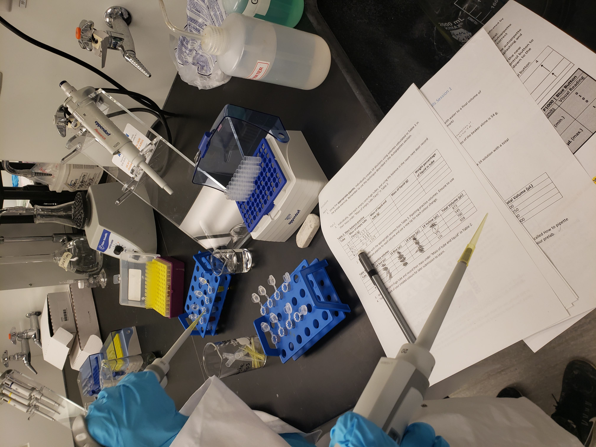
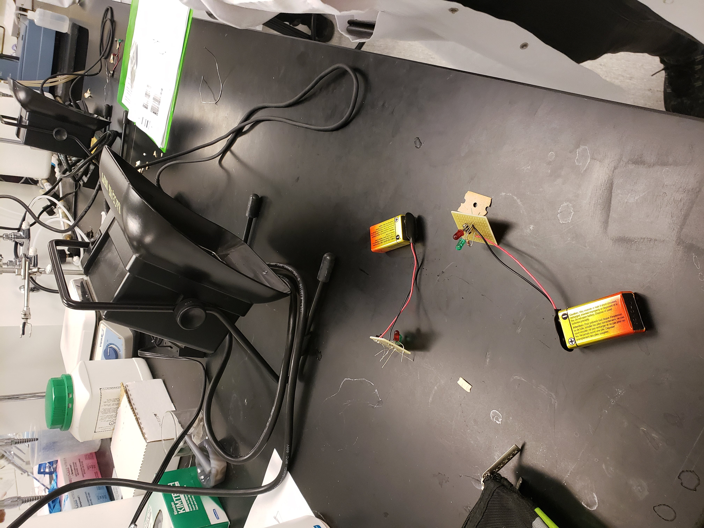
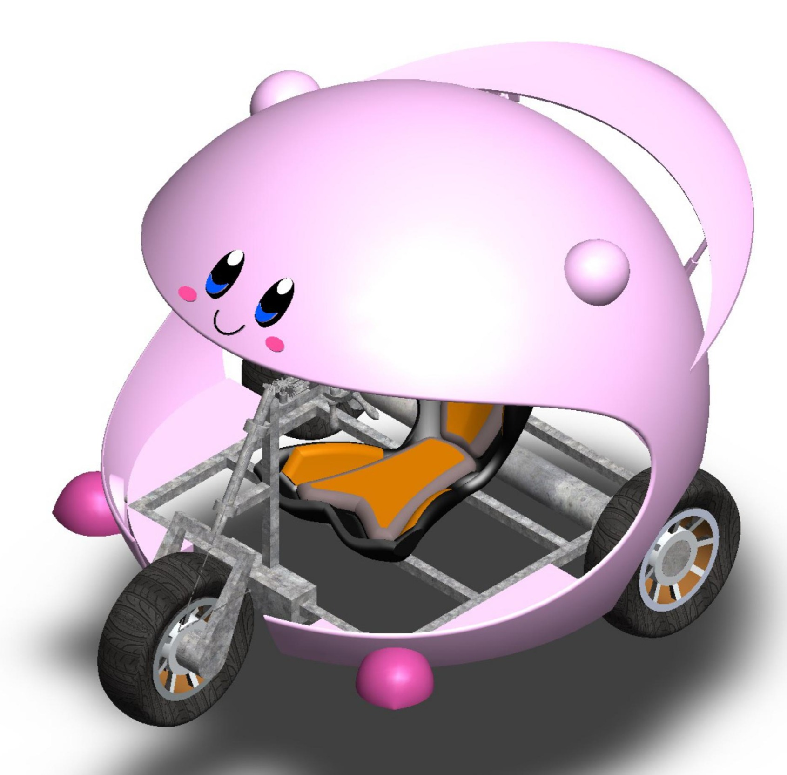
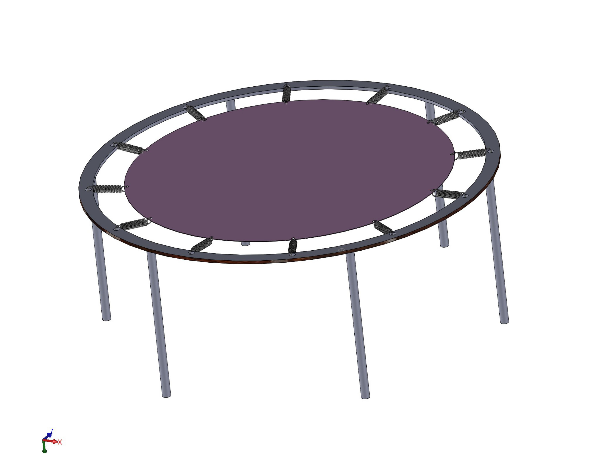

ALL LABS
-
Engineering Design Day
Tools: Machine Shop, MATLAB, Solidworks, Electrochemical etching

Tools: Electrochemical etching, MATLAB, Circuits, Mill, bench drill
As a group we were tasked to design, construct, and test a scanning tunneling microscope (STM). The end goal for the STM is to measure a sustainable tunneling current using simple materials. We constructed the STM in 4 stages: dividing a unimorph piezo disc into four quarters, build a isolation and damping encolsure first using CAD and then using the Machine shop tools and limited materials, build and test the current amplifier circuit, electrochemical etching to create an STM tip and MATLAB used to analyze, filter and display the data collected. -
NE100-Introduction to Nanotechonology; Bioplastics
Tools: Tensile strength machine, Excel
.jpg)
The lab required the class to produce 3 different bioplastic recipes: gelitine, agar, and another plastic. Then we compaired each bioplastic to each other and to an actual plastic based on tensile strength using the tensile strength Machine. Afterwards tensile strength data was collected, plotted and analyzed on Excel. -
NE140-Linear Circuits
Tools: Osiliscope, Linear circuits, decade box

Learning the basics of Linear circuits, operating an osiliscope, decade box to analyze AC/DC circuits. -
NE100-Introduction to Nanotechnology; Electroplating
Tools: Electroplating

Applying Redox knowledge to create artwork on copper plates by electroplating zinc onto copper. This resulted in really cool artwork. -
NE241-Electromagnetism
Tools: COMSOL
Application of COMSOL Software In Electromagnetic Fields Simulation -
NE216-Advanced Calculus/MATLAB
Tools: MATLAB

Currently taking the course.
Implementing numerical methods knowledge onto MATLAB. -
Pipetting
Tools: Microliter pipette

This experiment was designed to teach proper pipette etiquette using a Microliter Pipette. -
Solderring
Tools: Soldering iron

This experiment was designed to practice proper soldering techniques. In the image above shows 2 LED lights soldered on a perfboard. -
SolidWorks
Tools: SolidWorks: library, sketching, assembly

Improving CAD modeling skills on Solidworks by designing a trampoline indivisually and Soapcart in a group. -
Tweezer skills
Tools: Tweezers of different shapes and materials
The lab explained the different types of tweezers and their funcionality as well as made us understand which ones we are most comfortable at. We were timed on how fast we can pick-up and assymble objecs in each hand. -
NE113: Computational Methods
Tools: MATLAB, Excel
Basic appication of numerial methods onto Matlab and Excel. -
NE102- Nanotoxicology
In this course we analyzed and critiqued research papers, and were exposed to the dangers of nanotechnology.
Classes: NE216, NE241
-
NE216-Advanced Calculus/MATLAB
Tools: MATLAB
Currently taking the course.
Implementing numerical methods knowledge onto MATLAB. -
NE241-Electromagnetism
Application of COMSOL Software In Electromagnetic Fields Simulation
Using the application to conduct electromagnetic experiements. Currently taking the course.
Classes: Engineering Desgin day, NE113,NE140, NE102
-
Engineering Design Day
Tools: Machine Shop, MATLAB, Solidworks, Electrochemical etching
As a group we were tasked to design, construct, and test a scanning tunneling microscope (STM). The end goal for the STM is to measure a sustainable tunneling current using simple materials. We constructed the STM in 4 stages: dividing a unimorph piezo disc into four quarters, build a isolation and damping encolsure first using CAD and then using the Machine shop tools and limited materials, build and test the current amplifier circuit, electrochemical etching to create an STM tip and MATLAB used to analyze, filter and display the data collected. -
NE113: Computational Methods
Tools: MATLAB, Excel
Basic appication of numerial methods onto Matlab and Excel. -
NE140-Linear Circuits
Tools: Osiliscope, Linear circuits, decade box
Learning the basics of Linear circuits, operating an osiliscope, decade box to analyze AC/DC circuits. -
NE102-Nanotoxicology
In this course we analyzed and critiqued research papers, and were exposed to the dangers of nanotechnology.
Classes: NE100
NE100-Introduction to Nanotechnology

-
Bioplastics.
The lab required the class to produce 3 different bioplastic recipes: gelitine, agar, and another plastic. Then we compaired each bioplastic to each other and to an actual plastic based on tensile strength using the tensile strength Machine. Afterwards tensile strength data was collected, plotted and analyzed on Excel. -
Pipeeting
This experiment was designed to teach proper pipette etiquette using a Microliter Pipette. -
Soldering
Tools: Soldering Iron
This experiment was designed to practice proper soldering techniques. In the image above shows 2 LED lights soldered on a perfboard. -
Electroplating
Tools: Elctroplating
Applying Redox knowledge to create artwork on copper plates by electroplating zinc onto copper. This resulted in really cool artwork. -
SolidWorks
Tools: SolidWorks: library, sketching, assembly
Improving CAD modeling skills on Solidworks by designing a trampoline indivisually and Soapcart in a group. -
tweezer skills
Tools: Tweezers of different shapes and materials
The lab explained the different types of tweezers and their funcionality as well as made us understand which ones we are most comfortable at. We were timed on how fast we can pick-up and assymble objecs in each hand.